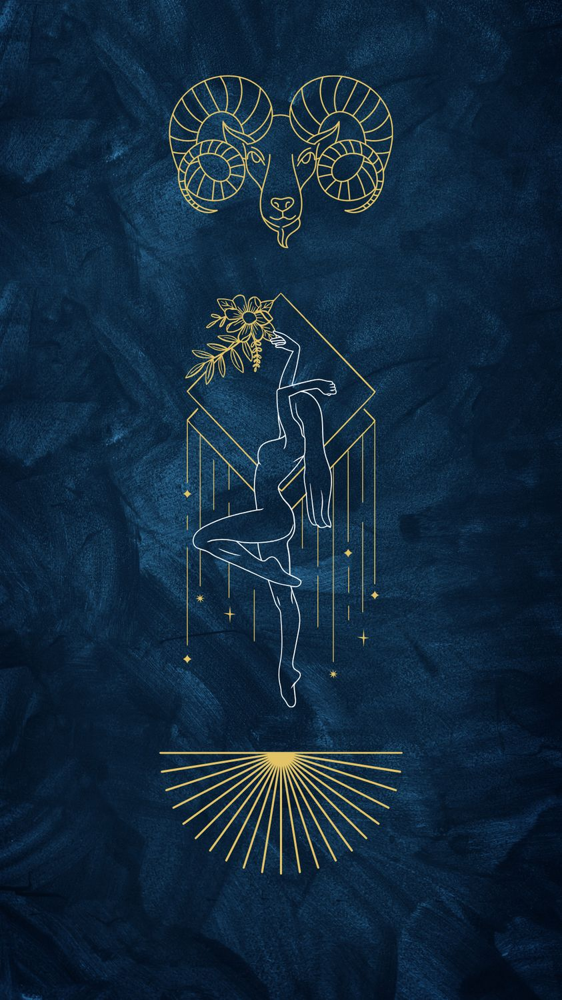

Koç
21 Mart – 19 Nisan · Element: Ateş · Yönetici: Mars

Genel Profil
Koç; başlangıç, cesaret ve hareket enerjisini temsil eder. Hızlı karar alır, riskten çekinmez.
Sabırsızlık ve acelecilik zaman zaman hataya açık alanıdır; hızını doğru yönettiğinde çok etkilidir.
Güçlü Yönler
- Cesaret ve girişkenlik
- Liderlik ve özgüven
- Hızlı aksiyon alma
- Rekabetçi ruh
Zorlayıcı Yönler
- Sabırsızlık
- Acele kararlar
- Çabuk parlayabilme
- Detayları atlama
Aşk
Tutkulu ve direkt. İlgisini net gösterir; heyecanı sever.
Kariyer
Girişimcilik, satış, spor, yönetim ve hızlı karar gerektiren işler.
İpucu
Bugün “hemen” demeden önce 30 saniye dur ve planla.